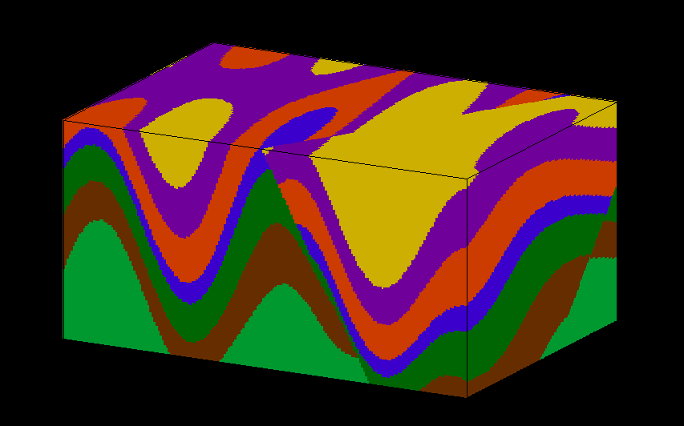

pynoddy¶
pynoddy is a python package to write, change, and analyse kinematic
geological modelling simulations performed with Noddy (see below for
more information on Noddy).
How does it work?¶
pynoddy provides methods to define, load, modify, and safe kinematic
models for simulation with Noddy. In addition, the package contains
an extensive range for postprocessing of results. One main aspect of
pynoddy is that it enables the encapsulation of full scientific
kinematic modelling experiments for full reproducibility of results.
A successful installation of pynoddy requires two steps:
- An installation of the python modules in the package
pynoddy - The existance of an executable
Noddy(.exe)program
Installation of the pynoddy package¶
Installation of the first part is straight-forward:
For the best (and most complete) installation, we suggest to clone the
pynoddy repository on:
https://github.com/flohorovicic/pynoddy
To install pynoddy simply run:
python setup.py install
sufficient privileges are required (i.e. run in sudo with MacOSX/
Linux and set permissions on Windows)
The pynoddy packages themselves can also be installed directly from the Python Package Index (pypi.org) via pip:
pip install pynoddy
A Windows installer is also available on the Pypi page:
Installation of Noddy¶
Noddy is a command line program, written in C, that performs the
kinematic simulation itself. The program compilation is platform
dependent, and therefore several ways for installation are possible (see
below information for specific platforms).
The C-code for Noddy itself is also part of the pynoddy repository.
Windows: An executeable version of the command line program is available for download .
MacOSX: Compile from source (using gcc):
- go to directory pynoddy/noddy (contains source files)
- run ./adjust_for_MacOSX.sh
- run ./compile.sh
Linux: Compile from source (using gcc):
- go to directory pynoddy/noddy (contains source files)
- run ./compile.sh
Documentation¶
Documentation is available within the pynoddy repository
(pynoddy/docs).
In addition, an up-to-date online html version of the documentation is also hosted on readthedocs:
How to get started: tutorial notebooks¶
The best way to get started with pynoddy is to have a look at the
IPython notebooks in pynoddy/docs/notebooks. The numbered notebooks are
those that are part of the documentation, and a good point to get
started.
The notebooks require an installed Jupyter notebook. More information here:
The notebook can be installed via pip or conda.
Dependencies¶
pynoddy depends on several standard Python packages that should be
shipped with any standard distribution (and are easy to install,
otherwise):
- numpy
- matplotlib
- pickle
The uncertainty analysis, quantification, and visualisation methods based on information theory are implemented in the python package pygeoinfo. This package is available on github and part of the python package index. It is automatically installed with the setup script provided with this package.
In addition, to export model results for full 3-D visualisation with VTK, the pyevtk package is used, available on bitbucket:
https://bitbucket.org/pauloh/pyevtk/src/9c19e3a54d1e?at=v0.1.0
The package is automatically downloaded and installed when running python setup.py install.
3-D Visualisation¶
At this stage, we do not supply methods for 3-D visualisation in python (although this may change in the future). However, we provide methods to export results into a VTK format. Exported files can then be viewed with the highly functional VTK viewers, and several free options are available, for example:
License¶
pynoddy is free software (see license file included in the repository). Please attribute the work when you use it and cite the publication if you use it in a scientific context - feel free to change and adapt it otherwise!
What is Noddy?¶
Noddy itself is a kinematic modelling program written by Mark Jessell [1][2] to simulate the effect of subsequent geological events (folding, unconformities, faulting, etc.) on a primary sedimentary pile. A typical example would be:
- Create a sedimentary pile with defined thicknesses for multiple formations
- Add a folding event (for example simple sinoidal folding, but complex methods are possible!)
- Add an unconformity and, above it, a new stratigraphy
- Finally, add a sequence of late faults affecting the entire system.
The result could look something like this:
The software runs on Windows only, but the source files (written in C) are available for download to generate a command line version of the modelling step alone:
https://github.com/flohorovicic/pynoddy
It has been tested and compiled on MacOSX, Windows and Linux.
References¶
[1] Mark W. Jessell. Noddy, an interactive map creation package. Unpublished MSc Thesis, University of London. 1981. [2] Mark W. Jessell, Rick K. Valenta, Structural geophysics: Integrated structural and geophysical modelling, In: Declan G. De Paor, Editor(s), Computer Methods in the Geosciences, Pergamon, 1996, Volume 15, Pages 303-324, ISSN 1874-561X, ISBN 9780080424309, http://dx.doi.org/10.1016/S1874-561X(96)80027-7.